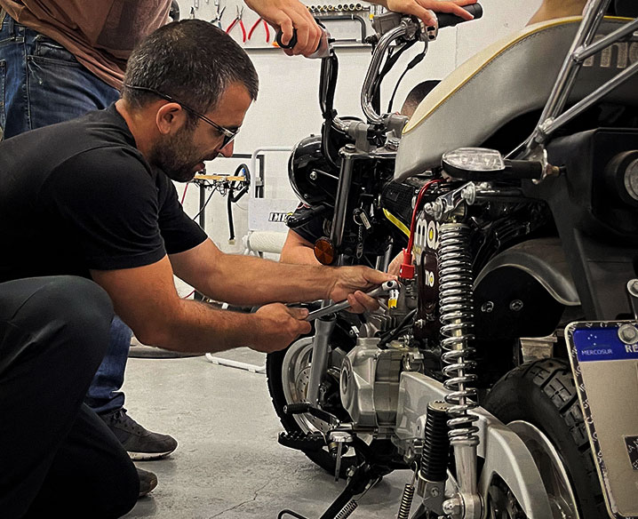
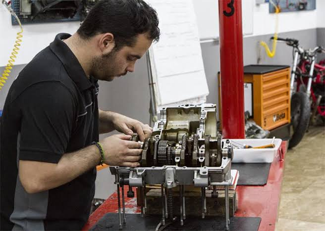
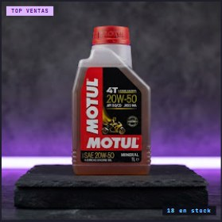
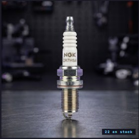
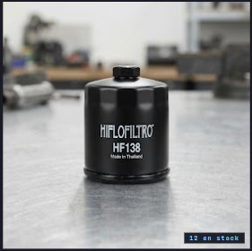
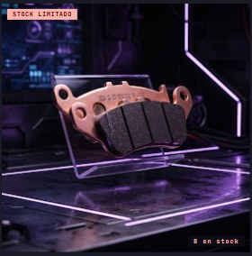
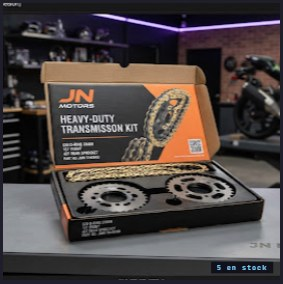
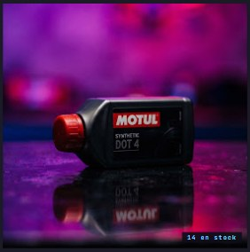

MANTENIMIENTO PREVENTIVO & ACEITE
Inspección rigurosa de 21 puntos críticos, lubricación micrométrica de guayas de embrague/acelerador, tensión y lubricación de cadena, y ajuste torquimétrico general.
TIEMPO ESTIMADO: 90 MIN
Precisión milimétrica, repuestos 100% garantizados.
Especialistas en mecánica preventiva, sistemas de frenado ABS y calibración multicilindro. Marcas: Yamaha, Bajaj, AKT, Honda, Suzuki, KTM. Inicia sesiòn y consulta nuestro stock sin intermediarios.

Cada servicio incluye reporte técnico digital, fotocopia de mediciones y checklist de seguridad de 21 puntos.
Inspección rigurosa de 21 puntos críticos, lubricación micrométrica de guayas de embrague/acelerador, tensión y lubricación de cadena, y ajuste torquimétrico general.
Sustitución de pastillas, purgado y reemplazo de fluido hidráulico DOT 4 / 5.1, cambio de retenedores y calibración de barras telescópicas invertidas.
tina de ultrasonido para inyectores, calibración micrométrica de holgura de válvulas con galgas de precisión, sincronización de cuerpos de aceleración y lectura de códigos OBD-II.
Montaje de kit de arrastre reforzado, ajuste de campana y discos de embrague, anillado, rectificación técnica de cilindro y ajuste estricto con especificación de fábrica por torque.
Eliminamos la incertidumbre de los talleres tradicionales. Con nuestra plataforma digital, sabes exactamente qué repuesto se cambió y cuánto costó.

Consulta el stock disponible en tiempo real en nuestro almacén. Para comprar online o apartar piezas, inicia sesión o crea tu cuenta en 1 minuto.

TOP VENTAS18 en stockFormulación de alta viscosidad y resistencia térmica para motos 4 tiempos. Protección superior contra el desgaste de la caja de cambios.

22 en stockElectrodo central de cobre enriquecido para máxima disipación de calor. Diseñada para óptima chispa en arranques en frío continuos.

32 en stockFiltración de micro-partículas con certificación TÜV. Construcción en acero de alta resistencia y válvula de alivio precalibrada.

5 en stockCompuesto cerámico de alto coeficiente de fricción. Menor desgaste del disco y mordida instantánea sin desvanecimiento por calor.

5 en stockCadena con bujes sólidos y piñonería de acero templado al carbono. Máxima durabilidad ante exigencia urbana y carretera continua.

14 en stockPunto de ebullición seco elevado (245°C) que evita el efecto esponjoso en la maneta o pedal durante frenadas intensas.
Inicia sesión para solicitar cotizaciones personalizadas o chatear con nuestros mecánicos especialistas directamente.
No encontramos productos con esa búsqueda.